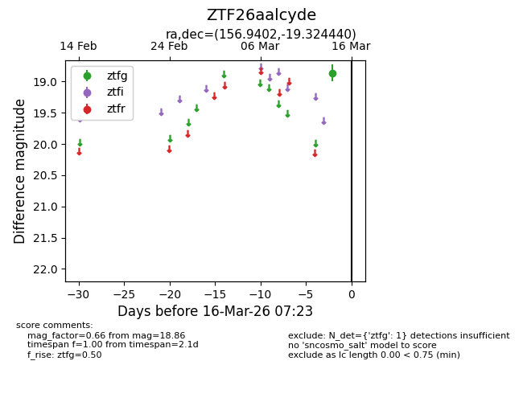
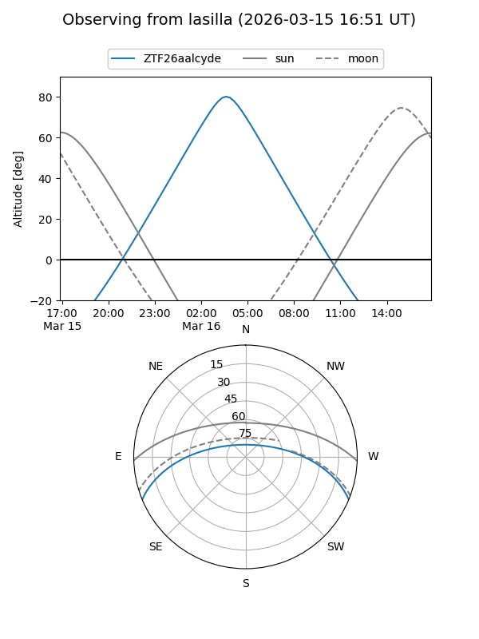
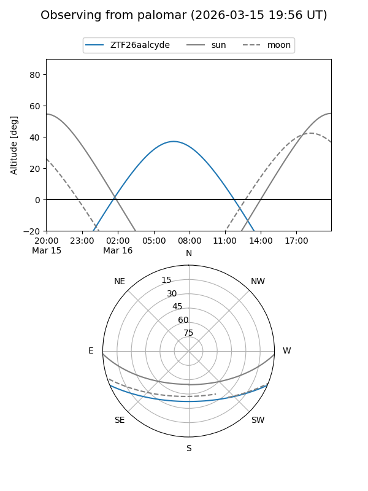

ZTF26aalcyde
Target ZTF26aalcyde at 2026-03-16 07:25
Aliases and brokers:
FINK: link
Lasair: link
ALeRCE: link
alt names
ZTF26aalcyde (ztf,fink_ztf)
Coordinates:
equatorial (ra, dec) = 156.9402,-19.32444
equatorial (HMS+DMS) = 10:27:45.64,-19:19:27.98
galactic (l, b) = (262.2042,+31.95489)
Flags:
Photometry:
last ztfg=18.86
1 ztfg detections
Lightcurve

Visibility


Additional plots